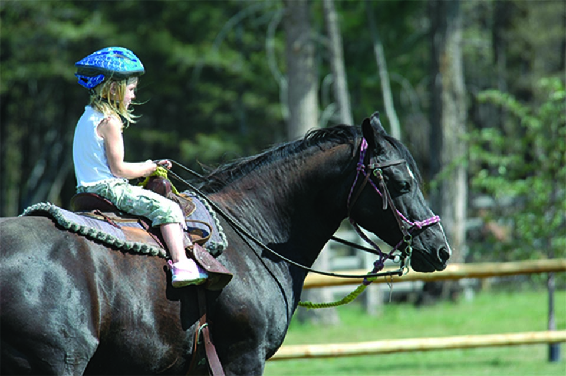
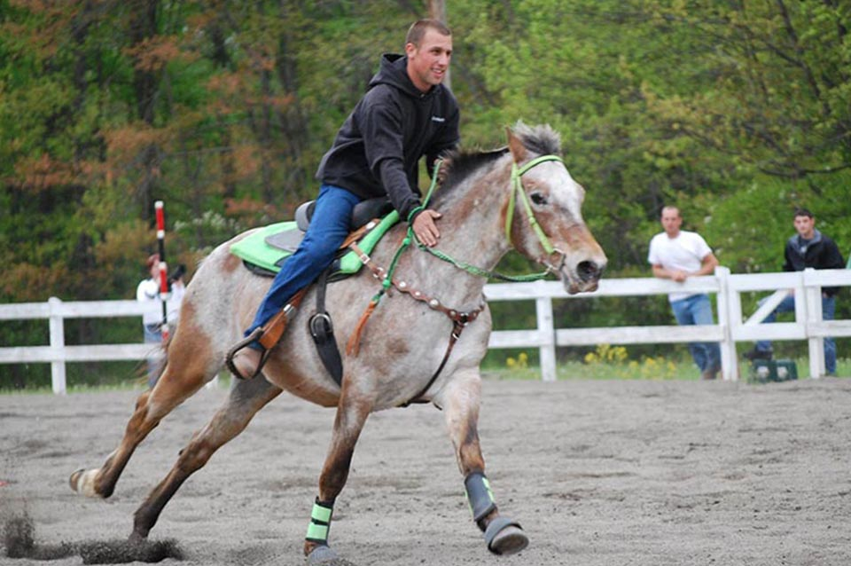

Novice Rider
Just like with any sport, you have to learn the fundamentals of horses and riding before you can move on. When you start with beginner riding lessons, you can expect to come out with a basic understanding of the animals and the sport.

Intermediate Rider
After you’ve mastered the basic, fundamental skills of horse riding, you will be ready to move on to the next step. Intermediate horse riding lessons will build from the foundation you have put down and help you move towards more advanced techniques.

Advanced Rider
If interested in taking advanced horse riding lessons, you can expect to build off of the skills you picked up in your previous riding lessons. If you’re ready for advanced horse riding lessons, chances are you are now a horse addict and are ready to learn more!